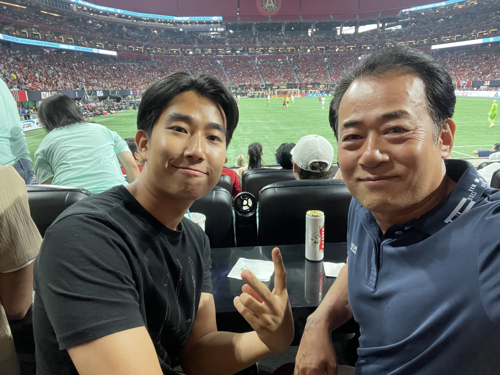
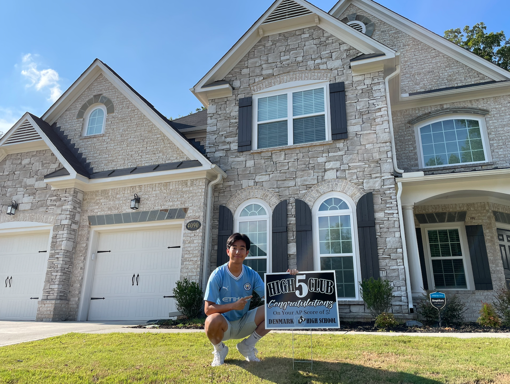
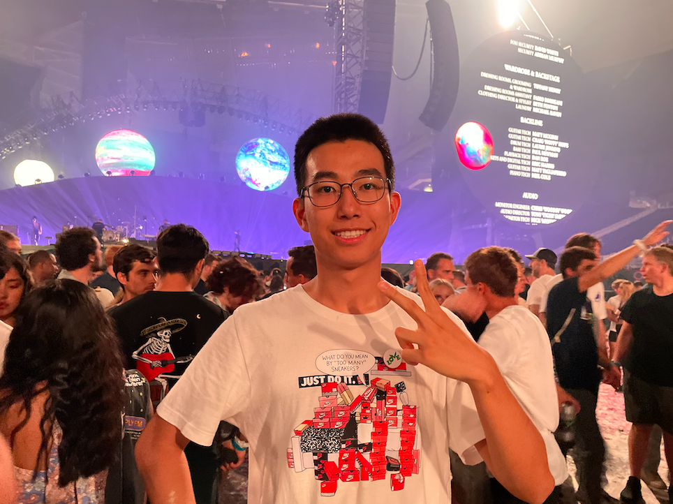

images/ch1-goo.jpg
안녕! 나는 최구라는 사람이야. 나는 현재 21살이고 지금 조지아 커밍에서 살고 있어. 경기도 용인시 수지구 상현2동에서 살았던 한국에서 태어난 한국 사람이고, 미국에는 2020년 코로나가 한창일 때 미국에 이민을 오게 되었어. 미국에 오게 된 계기는 부모님의 결혼으로 결혼 비자로 오게 되었어.
너도 알다시피 나는 어릴 적 친엄마가 불륜으로 아빠와 이혼을 하고 집을 나가게 되었고, 그 이후 어릴 때부터 아빠, 누나, 친할머니와 같이 살았었어. 엄마의 손길을 못 받고 자라서 조금이라도 부족한 부분이 있을까, 우리 아빠는 어릴 때부터 나와 누나에게 항상 너무나도 잘해주셨고, 그 덕에 지금까지 아빠와 나는 세상에서 제일 좋은 관계를 갖고 있어. 아빠는 나의 제일 좋은 아버지이자, 어머니이시고, 그리고 나의 제일 친한 친구이기도 하시지.

images/ch1-dad.jpg
Anyway, 다시, 2020년 9월 27일에 나는 미국에 오게 되었어. 지금의 나의 어머니(새어머니)는 미국에 20대쯤에 오셔서 여기서 오래 쭉 뉴욕에서 사셨고, 회사도 뉴욕에서 다니고 있었어. 근데 마침 조지아에 엄마 회사의 새 지점이 생겨서 바로 우리 이민 올 때 바로 내려오실 계획이셨어. 그래서 집도 그때 맞춰서 같이 짓고 있었는데 마침 그때 코로나가 터져서 우리 이민도 늦어졌고, 집도 차질이 생겨서 미국에 바로 왔을 땐 그냥 엄마가 원래 살고 있는 조그만 아파트에서 우리 모두가 살았었어. 그게 첫 3달이었고 그때 참 힘들었었지.. 그래서 미국에 오자마자 12월 말까지 뉴욕에서 학교도 다니고 살았었고, 바로 다음 해 1월에 드디어 조지아에 내려오게 됐지.
근데 그때 마침 엄마의 회사엔 무슨 문제가 생겨서 엄마는 조지아에 내려오는 게 차질이 생겼고, 엄마는 그래서 계속 못 내려오다가 작년 여름, 2025년 7월에야 내려왔어…

images/ch1-school.jpg
Anyway, 다시, 난 그렇게 조지아에 와서 10학년 2학기부터 Denmark High School을 다녔어. 한국에서부터 나는 축구와 야구를 해서 사실 공부도 많이 안 했고, 학원도 거의 안 다녔고, 그래서 공부를 많이 못했었어. 못한 것도 맞지만 그 못한 이유가 안 해서였어서, 한 번 못 따라가니까 아예 못 따라가겠더라고. 그래서 많은 것들을 포기하고 그렇게 막 살았지.
근데 여기 미국에 딱 오니까 언어, 영어가 아예 안 되는 게 너무 미치겠는 거야. 내가 그렇게 한국에선 말도 많고, 어쩌면 너무 말이 많아서 그렇게 나대던 애가 이 땅에 오니까 입이 근질근질한데 말을 못 하니까 정말 미치겠는 거야. 그래서 그때부터 영어 공부를 제대로 했지. 다행히도 너무나도 좋으신 내 영어 선생님을 고등학교에서 만날 수 있어서 금방 많이 배울 수 있었고, 정말 하루에 4~5시간은 항상 공부했던 것 같아.
이렇게 그냥 공부를 하는 패턴이 생기다 보니까 다른 과목들도 욕심이 나더라. 한국에서는 죽어도 해도 안 됐던 것들이 그냥 무식하게 많은 양의 시간을 때려박아서 공부를 해보니까 어떻게 또 되더라. 그래서 역사도 그렇고 수학도 그렇고 그냥 하나씩 정복하는 느낌으로 공부를 하게 되었고, 정말 high school 때 공부만 했던 것 같아.
그렇게 공부만 하다 보니까 점수 받는 것에 집착하게 됐고, 그 자체가 나의 인생의 목적이 되더라. 한국에서 넘어온 9th grade의 GPA는 2.8이었는데, 그렇게 10학년부터 항상 다 4.0, 12학년에는 4.4까지 받게 됐어. 그렇게 되니까 아예 관심도 없었던 대학도 욕심이 나기 시작했고, 그렇게 11학년 때부터 처음으로 Georgia Tech에 가고 싶다고 생각했었어.

images/ch1-hair.jpg
그래서 SAT도 정말 스스로 머리를 바리깡으로 밀고 공부할 정도로 엄청 열심히 했고, 그렇게 high school 생활을 했는데 막상 GT에 못 들어가니까 너무 좌절되더라.. 너무 간절히 원하던 것이었는데… 근데 사실 9학년 때 성적이 너무나도 안 좋았었고, 아무리 내가 열심히 공부하고 노력했어도 SAT 점수를 그렇게 잘 받았던 것도 아니고, 안 됐던 것들이 있었으니까 사실 지원할 때부터 안 되겠구나라는 걸 알고 있었어.
그래서 Backup 학교인 GSU를 지원했고, 결국 GSU로 들어가게 되었지. GSU를 가서도 high school 때부터 내가 못 이룬 그 GT 꿈을 이루겠다고 정말 또 공부만 하게 됐고, 그렇게 이제는 4.2의 GPA를 만들 정도로 그렇게 완벽하게 공부를 했었는데, 편입하는 게 또 쉽지만은 않더라. 정말 매년 항상 지원했었는데, 1번 안 되고, 2번째는 waitlist에 올라갔었는데 그것도 안 됐었어…
그렇게 어떻게 하다 보니까 의도치도 않게 3번째 시도는 할 필요도 없이 대학이 벌써 끝났더라… 물론 대학이 다 끝나서 내가 Master Degree로 GT에 지원을 했고, 정말정말 운 좋게 되긴 했는데, 내 대학 생활을 돌아볼 때 나는 정말 공부만 했던 것 같아. 그러다 일도 시작했고, 일, 공부, 집이 전부였어서.. 그래서 그게 가장 아쉽고… 잘 놀지도 못하고 즐기지도 못해서 그게 제일 안타까워. 정말정말 드디어 내가 원하던 GT에 들어왔는데 드디어, 뭔가 기쁘기만 한 건 아닌 것 같아…
그러다가…